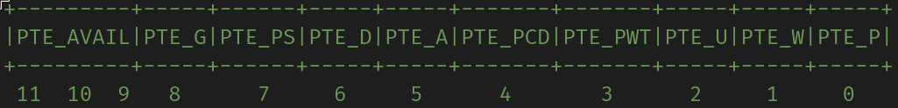

MIT 6.828 Labs 源码分析
MakeFile Part
/GNUmakefile
在6.828的lab根目录下有一个GNUmakefile，这是整个JOS内核的makefile，它会包含各个子目录下的Makefrag文件，负责提供各种编译指令接口。
verbose commands
1 | # Run 'make V=1' to turn on verbose commands, or 'make V=0' to turn them off. |
V是conf/env.mk中定义的一个变量，我们可以在这个文件中找到对它的描述：
1 | # '$(V)' controls whether the lab makefiles print verbose commands (the |
从注释中可以看出，V变量控制了make是否打印出详细的指令(也就是每一条shell指令)。默认情况下，make只会打印出简略的指令信息来告知我们目前在处理哪个指令。
Compiler Tool-chain configure
1 | # Cross-compiler jos toolchain |
这一段代码是用来设定编译使用的工具链的。6.828的代码主要会使用两个工具：GCC以及其下属的GNU工具链，以及qemu。6.828官方提供的工具链是以i386-jos-elf之类的前缀打头的，而Linux自带的工具链是没有这些前缀的，makefile接受这两种工具链。
两段Shell语句根据系统中安装的工具链种类分别设定了GCCPREFIX和QEMU两个变量，具体的语句逻辑为：
1 | # $(GCCPREFIX) |
Tools
1 | # try to generate a unique GDB port |
根据之前设定的$(GCCPREFIX)来设置各个工具的名称变量。之后就可以直接使用这些工具。
Flags
1 | # Compiler flags |
对编译器和链接器设定的一些参数。
CFLAGS：gcc使用的各个参数(重要)。-O1：JOS内核使用O1优化等级编译，这是为了减少显式的inline声明，让debug变得更简单。-fno-builtin：不使用任何C语言的内建函数，防止JOS自己定义和实现的函数与原有的C标准库函数发生命名冲突。这里如果想单独屏蔽几个函数的话也可以-fno-builtin-<functionname>。-I$(TOP)：之前设置了TOP=.所以这个参数其实是-I.。这个参数会让GCC优先在.目录下查找头文件，以让JOS在使用<>的情况下也可以优先使用inc目录下的头文件。类似的参数有-L，用来使GCC优先在指定目录下寻找库文件。-MD：将目标文件所需要的全部依赖信息输出到一个.d文件中。这里如果是-M就是输出到stdout，如果是-MM就不输出由头文件包含所引起的依赖。-fno-omit-frame-pointer：在优化代码时不省略对ebp寄存器的压栈操作，也就是保持栈帧的完整结构。默认情况下这个选项应该是开启的，这里可能是以防万一。如果这个选项不开启，在函数调用时就不会先压入ebp，从而为backtrace带来困难。-static：优先使用静态库-std=gnu99：使用GNU扩展的C99标准-fno-pie：不生成位置无关代码，关系到一些6.828中的思考题-Wall：显示所有警告。这一行主要是关于调试信息生成的。-Werror：把所有警告当作错误。与上一行结合起来可以发现设计实验的人是魔鬼(不是)-gstabs：生成stab格式的调试信息，在Lab1中设计monitor的时候会用到。-m32：生成32位汇编代码。
LDFLAGS：链接器使用的参数，这里的-m elf_i386是指定模型。ULDFLAGS = -T user/user.ld：指定链接器使用的用户脚本info ld可以查看.ld文件的格式介绍- 具体的脚本内容在之后研究
GCC_LIB：gcc使用的库文件路径
Suffixs
1 | # Make sure that 'all' is the first target |
这一部分主要是一些内置的makefile目标名，用于进行一些设置。
all：放在最前面，无条件编译全部代码.SUFFIXS：这个目标后的前置条件是将要用于检查后缀规则的后缀们，在这里是空的代表我们不使用后缀规则。.DELETE_ON_ERROR：如果设置了这个目标，make会在一个规则的recipe进程返回1时删除掉改变了的目标文件。.PRECIOUS：这个目标的所有前置条件不会在相应的recipe进程返回1后被删除。这个目标与刚才的.DELETE_ON_ERROR相结合，可以对不想在出错时删除的目标们进行保护。在这里保护的目标是根目录下和obj目录下的所有.o文件。KERN_CFLAGS/USER_CFLAGS：在编译时带上不同的宏定义。gcc的编译选项-D后面可以接一个宏定义的名字，-DJOS_KERNEL表示在编译时带一个宏定义JOS_KERNEL，-DJOS_UER同理。这两个变量主要用来进行内核/用户的权限管理。
Includes and QEMU configure
1 | # Include Makefrags for subdirectories |
包含选项包含了各个子目录下的Makefrag。
CPUS ?= 1将默认的CPU数目置为1。在做lab的过程中我们经常通过设置CPUS = x来增加核数。
对qemu的参数设置主要是与qemu本身规范有关：
QEMUOPTS：下面用来运行qemu的各种参数file：将要运行的镜像index：跟在file后，指定这个镜像的序号
IMAGES：使用的镜像列表
Rules
1 | .gdbinit: .gdbinit.tmpl |
在进行了冗长的配置之后，终于到了规则部分。接下来逐条分析这些规则：
- 比较重要的：
gdb：即我们常用的make gdb，-n指定不以默认的~/.gdbinit文件为初始化文件，-x .gdbinit指定新的初始化文件。初始化文件会将我们的gdb配置为运行在i386架构32位模式下，支持elf文件格式。qemu：使用之前已经初始化好的QEMU和QEMUOPTS运行qemu。qemu-nox：增加一个-no-graphic参数qemu-gdb：增加一个-S参数，让qemu在启动时不马上启动CPU。qemu-nox-gdb：上面两个的叠加。grade：运行目录下当前Lab对应的grading脚本。clean：在切换到之前的lab时，如果不make clean删除掉超前的一些.o文件，编译会因为头文件不足而出错。
- 不太重要的：
.gdbinit：用sed工具将.gdbinit.tmpl中使用的端口1234替换为之前生成的GDBPORT。< $^是以前置条件，即.gdbinit.tmpl为输入，> $@是以目标，即.gdbinit为输出。print-qemu/print-gdb：打印出我们使用的qemu二进制文件或GDBPORT。realclean/distclean：不大会用到，在make clean的基础上多删除些东西。handin系列：用于提交，我们用不到。
比较难以分析的一个规则是prep-%，这个规则是后面的几个run-%规则的基础，后面的几个规则都只是在这个基础上以不同的方式打开qemu。这个规则主要的作用是以不同的参数重新编译内核。
首先我们阅读init.c可以发现这样一段代码：
1 |
|
可以发现，如果我们在编译内核时定义了TEST宏，这里就会为TEST的值对应的用户程序创建新进程，否则会运行内核编写者在init.c中自行定义的用户程序。
将prep-%规则的recipe展开，将所有$*转换为%匹配到的值，得：
1 | make " |
这里的双引号是为了防止shell将后面的-DTEST参数识别为make的参数。INIT_CFLAGS参数是kern/Makefrag编译内核时传递给gcc的命令行参数，这里用了一个递归的变量${INIT_CFLAGS}以包含原来的参数，后面增加的参数是-DTEST，这个参数定义了TEST宏并为其赋值，以在init.c中运行特定的测试程序。
赋值的方式是一个shellscript的``表达式，其内容是一个case-in结构。根据shellscipt的语法，case-in结构的含义是这样的：
1 | case [condition] in |
照这样看，这个结构检查%匹配到的字符串是否满足*_*结构，也就是是否有下划线，如果有，说明指令是run-user_*，那就可以直接用%去作为TEST宏的值；否则，指令是run-*，那么需要为其加上user_前缀。
/kern/Makefrag
内核部分的makefile片段。这边的内容没有根目录下的复杂所以直接分段写出大概的解析。
1 | # Makefile fragment for JOS kernel. |
设置内核的链接选项，-nostdlib指定不使用C标准静态库，-T指定ld script的路径。
1 | # entry.S must be first, so that it's the first code in the text segment!!! |
设定编译内核所需要的源文件列表。
1 | # Binary program images to embed within the kernel. |
设置要嵌入内核的二进制文件列表和内核需要的.o文件列表。patsubst会将通配符展开。
1 | # How to build kernel object files |
目标文件的构造规则，编译或汇编所有的源码文件。
1 | # Special flags for kern/init |
对于init.o我们需要在编译时添加INIT_CFLAGS，原因见GNUmakefile部分对这个参数的设定。
1 | # How to build the kernel itself |
用于编译内核可执行文件的规则。可以看到，内核是由所有用到的.o文件和gcc库文件共同链接得到的。同时，这条规则还会将内核的反汇编代码和符号表信息保存起来。
1 | # How to build the kernel disk image |
用于构建内核镜像的规则。
dd是用于文件格式转换的工具，在这里被用来将bootloader(/boot/boot)和内核(/kern/kernel)构建为kernel.img。构建过程分为三步：
- 第一步：
/dev/zero是一个特殊文件，它能提供无限的0数据流，在这里用于初始化临时文件kernel.img~，初始化大小为10000个块，stderr屏蔽掉。 - 第二步：将
boot文件写入到临时镜像，conv=notrunc指定不要截断原来初始化出的多余部分。 - 第三步：将
kernel文件写入到临时镜像，同样不要截断，seek=1表示跳过第一个块，也就是那个存放了bootloader的块。
在这个构建过程中使用临时镜像/kern/kernel.img~而不是直接构建kernel.img的原因是如果make在执行中途发生错误而退出，这种操作不会损坏原有的镜像文件。
/lib/Makefrag
函数库的makefile片段。原理和上面的差不多，没什么好说的。
1 | OBJDIRS += lib |
/boot/Makefrag
构造bootloader的makefile片段。
1 | # |
比较重要和复杂的是最后一条规则：
- 第一步：
ld链接-N：将text和data区标记为可读可写的-e start：指定程序开始执行的位置为start标签-Ttext 0x7c00：指定代码区的起始位置为0x7c00
- 第二步：保存
bootloader的反汇编代码 - 第三步：将
bootloader的代码段拷贝到boot.out-S：不拷贝符号表和重定位信息-O binary：指定输出格式为二进制-j .text：仅复制代码段
- 第四步：运行perl脚本
/user/Makefrag
编译用户程序的makefile片段。
1 | OBJDIRS += user |
这里的重点是obj目录下各个用户程序的可执行文件的编译。
- 目标：通过通配符匹配
obj/user/目录下的所有无扩展名可执行文件 - 前置条件：
- 该目录下的
.o文件 obj/lib下的entry.o文件，这个文件是所有用户程序的入口点$(USERLIBS:%=$(OBJDIR)/lib/lib%.a)：这种语法格式是$(<varname>:<pattern1>=<pattern2>)，表示将<varname>变量中所有符合<pattern1>的字符串换为<pattern2>，这里是将USERLIB变量中的所有字符串转换为对应的obj/lib/文件夹下的lib*.a文件。user/user.ld，ld script。
- 该目录下的
recipe：ld：将entry.o和目标.o文件链接起来成为对应的.debug文件。ULDFLAGS和LDFLAGS：继承下来的参数-nostdlib：不使用C标准库-L $(OBJDIR)：让ld在JOS的对象库中寻找库文件$(USERLIBS:%=-l%)：在链接时加载JOS的所有用户库
- 剩下几条与其他
Makefrag类似。
Tester Part
/inc
inc文件夹包含了JOS中的部分头文件，这个部分是指那些被不止一个文件所依赖的头文件。如果一个头文件只被一个*.c代码文件所引用，它会被命名为*.h并放置于*.c所在的文件夹下。
1 | inc |
/inc/mmu.h
MMU是x86架构CPU中用于管理内存的单元，这个头文件中主要定义了一些用于描述mmu行为的函数、数据结构和宏，包括实现分页机制和段机制需要的数据结构定义和常量，用来设置cr0，cr4和eflags寄存器标志位的一些标志常量，以及用于异常处理的数据结构和宏。
Paging data structures and constants
这一部分主要包括用于分页机制的一些宏函数。
Analyzing linear addresses
有关虚拟地址的结构，在6.828实验记录的$1.4.1.$Background Knowledge一章已经记录过，并且mmu.h的注释中也有形象详细的描述，这里不再重复。
1 | // page number field of address |
这五个都是在内存管理中无比常用的宏，按标准实现起来也很简单，因此不展开说明。
PD and PT constants
1 |
一般来说只要线性地址的结构规定不改变，这些常量的值都不需要修改。不过，为了保持良好的编程习惯，最好还是减少hardcode的次数，改用这些常量来描述。
PTE flags
1 |
|
由于每个PTE(页表表项)都其实是一个物理页面的地址，而页面的地址是向PGSIZE对齐的，每个PTE都会有空闲的12位。JOS将这十位作为PTE的标志位，用以标识这一页的具体属性。
根据上面的定义，我们可以大致描绘出这12位的具体用途：

在管理页表时，我们最常用到的还是最低三位：
PTE_P：这个页面已经被分配PTE_W：这个页面具有写权限PTE_U：这个页面可以被用户访问
这三位是由操作系统进行设置和管理的，CPU只负责根据它们来检查访问的合法性。
在管理文件系统的时候也会用到这两位：
PTE_D：这个页面是否被修改过PTE_A：这个页面是否被访问过
这两位是由CPU进行设置的，操作系统通过读取它们来得知页面的状态，也可以对它们进行修改。
比较特殊的是最高三位，它们被标注为PTE_AVAIL，也就是说它们是保留位，CPU不会设置或检查它们，这样我们可以用它们来自定义一些页面属性，比如写时复制的PTE_COW。
一旦出现了对一个页面的与其权限描述冲突的访问，CPU就会产生一个中断。
PTE_SYSCALL不是一个标志位，它代表着所有能被系统调用访问或修改的标志位的集合，用于方便我们在实现操作系统的时候限制用户的权限。PTE_ADDR用于抹除掉一个PTE中的标志位，好让我们寻找到它指向的页面的起始地址。
Register flags
1 | // Control Register flags |
这些定义全都用于设置cr0、cr4和eflags三个寄存器的标志位，让我们能更方便地去访问和修改这三个寄存器的值。具体如何使用，参照x86架构对这三个寄存器的定义即可。
Segmentation data structures and constants
这一部分主要包括关于分段机制的一些数据结构和常量定义。
Setting GDT
1 |
|
/boot
boot文件夹包含了用于构造bootloader所需的源代码。
1 | boot |
/boot/boot.S
1 | #include <inc/mmu.h> |
boot.S需要用到mmu.h中一个用于构造GDT表项的SEG宏，因此需要包含这个头文件。
在mmu.h中我们可以看到一段包含在#ifdef __ASSEMBLER__ ... #endif结构中的代码，这段代码就是为了这里而写在那里的，SEG宏的具体细节在mmu.h头文件中分析。
1 | # Start the CPU: switch to 32-bit protected mode, jump into C. |
1 | .globl start |